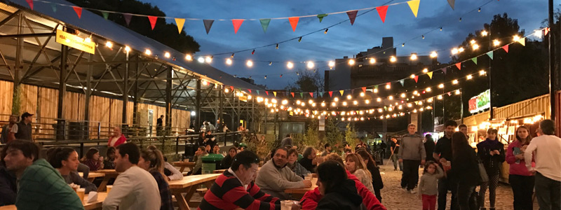

donde comer
en este buscador, vas a poder filtrar por nombre, tipo de establecimineto y por barrio

en este buscador, vas a poder filtrar por nombre, tipo de establecimineto y por barrio
En Buenos Aires vas a encontrar platos tipicos y comida de todo el mundo

conoce los patios y mercados en donde podes disfrutar de la mejor gastronomia de la ciudad
ver mas